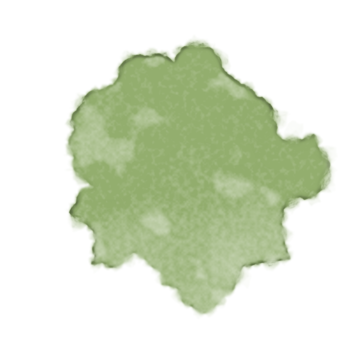
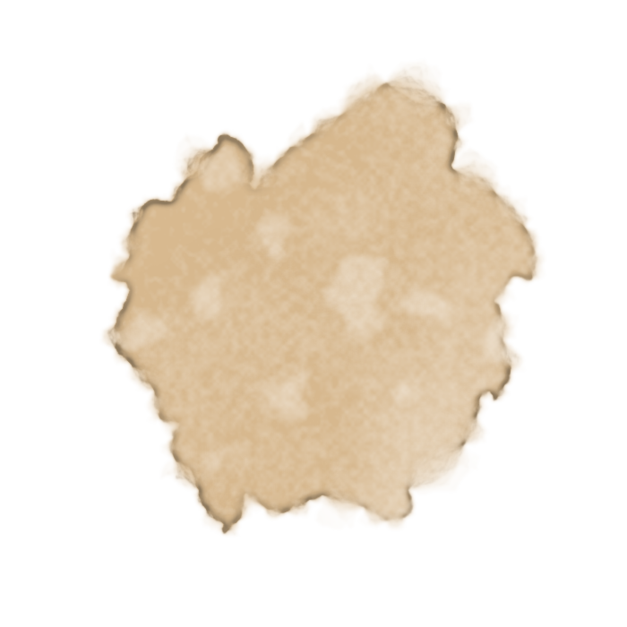
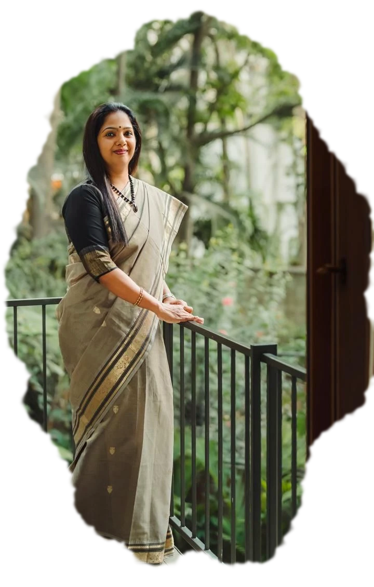
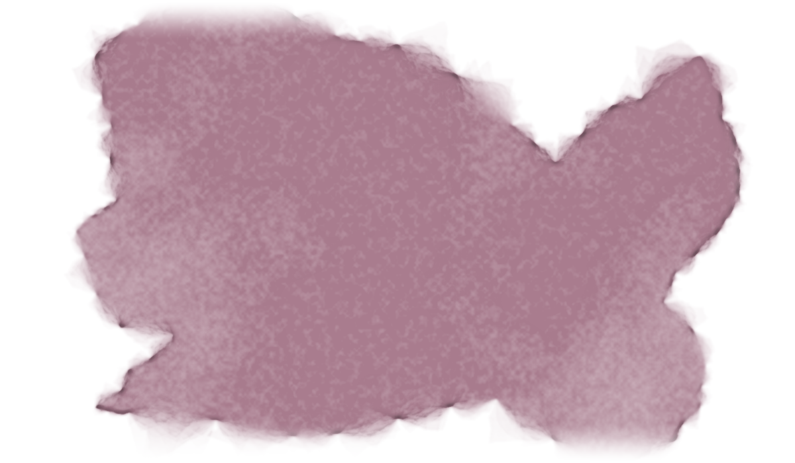

After years of working closely with business families, I have come to believe that good stewardship depends on how well a family's assets, responsibilities and aspirations are managed.
The size of the number matters less.
Building one takes experienced professionals, technology, research, compliance, reporting and governance. It also takes a great deal of the family's own time to supervise.
You set out to simplify life, and end up running one more organisation.
Investment advisory, succession planning, tax coordination, family CFO services and governance.
Professionals, research, technology and reporting.
One consolidated view across investments, businesses, real estate, trusts and liabilities.
Frameworks that reduce dependence on any one family member.
Without having to hire and manage a team.

But here is the test I would apply either way.
Its job is to help the family exercise that control with clarity, confidence and continuity.
Answer honestly, together. The disagreements are the useful part.